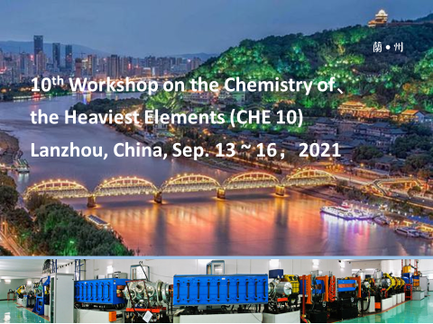

10th Workshop on the Chemistry of the Heaviest Elements
(CHE10)
Lanzhou, China
September 13 - 16, 2021

Background
The CHE 10 is the tenth in the series of international workshop dedicated to recent achievements and developments in experiment and theory on the Chemistry of the Heaviest Elements. The previous series of workshops were held in Grossbothen (1991), Solothurn (1993), Mainz (1995), Stenungsund (1997), Hasliberg (2001), Oslo (2005), Mainz (2009), Takayama (2013) and Ascona (2017).The CHE10 is organized by Institute of Modern Physics, Chinese Academy of Sciences.